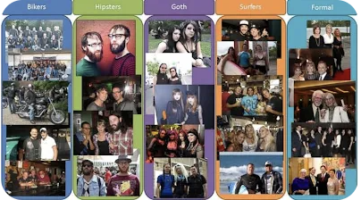

Press & Media
Radar
Vil banke Silicon Valley på AI: Nu slår de nordiske lande sig sammen
Feb 26, 2024 • By Peter Christian Bech-Nielsen
Cornell Chronicle
“Radical collaboration” through machine learning
Mar 7, 2017 • By Joe Wilensky
The Metropolitan Museum of Art
Scenes from a Salon on Artificial Intelligence
Sep 11, 2020 • By Sofie Andersen
ABC News
Computer Program That Can Tell If You’re a Hipster
Dec 11, 2013

Google Research
Announcing the 6th Fine-Grained Visual Categorization Workshop
Apr 29, 2019 • By Serge Belongie & Christine Kaeser-chen